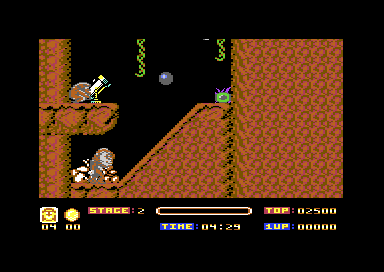
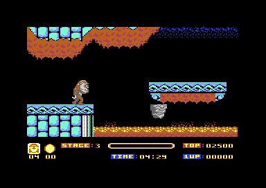
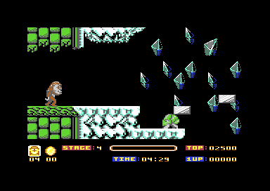
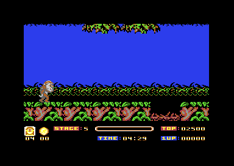

<meta charset="utf-8">
<meta name="viewport" content="width=device-width, initial-scale=1">
<title>{{title}}</title>
<link rel="preconnect" href="https://fonts.googleapis.com">
<link rel="stylesheet" href="https://fonts.googleapis.com/css2?family=Lato:wght@400;700;900&family=IBM+Plex+Mono:wght@400;500&display=swap">
<style>
:root{
  --bg:#23262d; --paper:#e9e7e1; --surface:#ffffff; --surface-2:#f1efea; --line:#d5d3cc; --line-soft:#e0ded8;
  --ink:#2f3136; --ink-soft:#55585f; --ink-mute:#80838a;
  --link:#1f5fa8; --link-hover:#154480; --accent:#1f5fa8;
  --amber:#c25a00; --cyan:#1f5fa8; --coral:#d04a3a; --green:#2a8a4a; --violet:#4a5bd6; --hl:#fff0c2;
  --chip:#2f3136; --chip-ink:#ffffff;
  --c64blue:#40318d; --c64grey:#686868;
  --fd:'Lato',system-ui,sans-serif; --fb:'Lato',system-ui,sans-serif; --fm:'IBM Plex Mono',ui-monospace,Menlo,monospace;
  --col:1080px; --gx:68px; --fs:17px; --lh:1.6; --hw:900; --h1:46px; --h2:26px; --sy:48px; --pp:26px; --r:10px;
  --plate-shadow:0 1px 2px rgba(0,0,0,.05),0 4px 14px rgba(0,0,0,.05);
}
*{box-sizing:border-box}
html{background:var(--bg);min-height:100%}
body{background:var(--paper);color:var(--ink);font-family:var(--fb);font-size:var(--fs);line-height:var(--lh);max-width:var(--col);margin:0 auto;min-height:100vh;padding:0 0 4rem}
h1,h2,h3{font-weight:var(--hw);letter-spacing:-.01em;text-wrap:balance;color:var(--ink);margin:0}
.wrap{padding:0 var(--gx)}
.hero{padding:48px var(--gx) 8px;text-align:left}
.eyebrow{font-family:var(--fm);font-size:12px;letter-spacing:.08em;text-transform:uppercase;color:var(--ink-mute);margin:0 0 10px}
.hero h1{font-size:var(--h1);line-height:1.15;letter-spacing:-.02em;margin:0 0 14px}
.hero .sub{margin:0 0 .6em;color:var(--ink-soft)}
section{padding:var(--sy) 0 24px}
table{border-collapse:collapse;width:100%;margin:18px 0;font-size:15px}th,td{text-align:left;padding:8px 12px;border-bottom:1px solid var(--line)}th{color:var(--ink-mute);font-size:12px;letter-spacing:.08em;text-transform:uppercase;font-family:var(--fm)}h3{font-size:19px;margin:28px 0 8px}
section:last-of-type{border-bottom:none}
.fig{font-family:var(--fm);font-size:12px;letter-spacing:.08em;text-transform:uppercase;color:var(--ink-mute);margin:0 0 10px}
h2.t{font-size:var(--h2);margin-bottom:12px}
.lede{color:var(--ink-soft);margin:0 0 30px}
.plate{background:var(--surface);border:1px solid var(--line);border-radius:var(--r);padding:var(--pp);box-shadow:var(--plate-shadow)}
.cap{font-size:14px;color:var(--ink-mute);margin-top:14px;line-height:1.55}
.cap b{color:var(--ink);font-weight:700}
code{font-family:var(--fm);font-size:.82em;background:var(--chip);color:var(--chip-ink);border-radius:4px;padding:2px 6px;white-space:nowrap}

</style>
<!--
  Template for a game article. Keep it self-contained: inline CSS and JS,
  fonts are the only external resource, opens from disk. The section below
  shows the parts a section is made of, not which section comes first: the
  kinds of section are listed in kit/skills/core/70-minisite, in no order,
  and this page's order is its own. The best thing to press or hear goes
  as high as the explanation lets it, and every section should have
  something the reader can press. Copy follows kit/style.md and is written
  last.
-->
<!-- tabs -->
<header class="hero">
  <p class="eyebrow">Commodore 64 · 1991 · Ocean Software</p>
  <h1>Toki</h1>
  <p class="sub">The clock, the lives, the score, and the weapons.</p>
</header>
<main class="wrap">
<section id="stages">
  <p class="fig">Stages</p>
  <h2 class="t">Five stages against a clock</h2>
  <p class="lede">Each stage has its own name and its own clock, which starts at 4:30.</p>
  <p>The stages are Labyrinth of Caves, Lake Neptune, Caverns of Fire, Ice Palace, and Dark Jungle. The clock counts down from 4:30 in the status bar <code>$8295</code>, and its digits change colour for the last minute <code>$82E2</code>. Zzap!64 found the levels fairly big and not hard early on, and called the mix of horizontal and vertical scrolling and swimming sections unpredictable.<sup class="fn"><a href="about.html#src-4" title="Zzap!64 80">4</a></sup></p>

  <div class="plate" style="margin-top:20px"><p class="cap"><b>Stage 2, Lake Neptune.</b> The clock reads 4:29 a moment after the start.</p></div>
  <div class="plate" style="margin-top:20px"><p class="cap"><b>Stage 3, Caverns of Fire.</b> The clock reads 4:29 a moment after the start.</p></div>
  <div class="plate" style="margin-top:20px"><p class="cap"><b>Stage 4, Ice Palace.</b> The clock reads 4:29 a moment after the start.</p></div>
  <div class="plate" style="margin-top:20px"><p class="cap"><b>Stage 5, Dark Jungle.</b> The clock reads 4:29 a moment after the start.</p></div>
</section>
<section id="lives">
  <p class="fig">Lives and score</p>
  <h2 class="t">Five lives, and a spare for every twenty items</h2>
  <p class="lede">A new game starts with five lives, and the game hands out more.</p>
  <p>A new game puts 5 in the lives counter <code>$83ED</code>. Every round, the first included, takes one off, and each stage's introduction adds one back, so starting a stage costs nothing <code>$089D</code>. The two-digit counter beside the lives counts the items collected, and every twentieth item sets it back to 00 and adds a life <code>$A868</code>. One other kind of item adds a life on its own. Score awards come in three sizes, 10, 50, and 100 points, kept as three five-digit numbers <code>$02BB</code> and added to the score digit by digit <code>$439B</code>.</p>
</section>
<section id="weapons">
  <p class="fig">Weapons</p>
  <h2 class="t">Five weapon records, and a countdown</h2>
  <p class="lede">Toki spits fireballs, and picking up an item can change how.</p>
  <p>The game stores five weapon records, and an item that carries a weapon copies the matching record's address into the pointer the fire routine reads <code>$B8F8</code>. The pick-up also stores the weapon's number, 0 to 4, which the fire routine tests <code>$08E0</code>. Weapons 0 to 2 make one shot for a press of fire, and weapon 1 takes 2 hit points off an object instead of 1. Weapons 0 and 1 play a firing sound and weapon 2 plays none. Weapons 3 and 4 make two shots and play a different sound. A picked-up weapon lasts until a countdown runs out, and then the game goes back to weapon 0 <code>$08CD</code>.</p>
  <p>Another item gives Toki a timed effect <code>$A868</code>, and his sprite flashes as the effect runs out <code>$B8CF</code>. Zzap!64 says the American football helmet gives a brief period of invincibility.<sup class="fn"><a href="about.html#src-4" title="Zzap!64 80">4</a></sup></p>
</section>
</main>
<footer style="margin:16px 0 0;padding:22px var(--gx) 0;border-top:1px solid #e0ded8;font-family:'IBM Plex Mono',ui-monospace,Menlo,monospace;font-size:12px;color:#80838a"><a href="https://github.com/gamesexplained/gamesexplained" aria-label="GitHub" style="display:inline-flex;align-items:center;justify-content:center;width:26px;height:26px;margin-left:8px;border:1px solid #e0ded8;border-radius:7px;background:#ffffff;color:#80838a;vertical-align:middle"><svg width="15" height="15" viewBox="0 0 24 24" fill="currentColor" aria-hidden="true"><path d="M12 .297c-6.63 0-12 5.373-12 12 0 5.303 3.438 9.8 8.205 11.385.6.113.82-.258.82-.577 0-.285-.01-1.04-.015-2.04-3.338.724-4.042-1.61-4.042-1.61C4.422 18.07 3.633 17.7 3.633 17.7c-1.087-.744.084-.729.084-.729 1.205.084 1.838 1.236 1.838 1.236 1.07 1.835 2.809 1.305 3.495.998.108-.776.417-1.305.76-1.605-2.665-.3-5.466-1.332-5.466-5.93 0-1.31.465-2.38 1.235-3.22-.135-.303-.54-1.523.105-3.176 0 0 1.005-.322 3.3 1.23.96-.267 1.98-.399 3-.405 1.02.006 2.04.138 3 .405 2.28-1.552 3.285-1.23 3.285-1.23.645 1.653.24 2.873.12 3.176.765.84 1.23 1.91 1.23 3.22 0 4.61-2.805 5.625-5.475 5.92.42.36.81 1.096.81 2.22 0 1.606-.015 2.896-.015 3.286 0 .315.21.69.825.57C20.565 22.092 24 17.592 24 12.297c0-6.627-5.373-12-12-12"/></svg></a><a href="https://discord.gg/3V9GWyRDWV" aria-label="Discord" style="display:inline-flex;align-items:center;justify-content:center;width:26px;height:26px;margin-left:8px;border:1px solid #e0ded8;border-radius:7px;background:#ffffff;color:#80838a;vertical-align:middle"><svg width="15" height="15" viewBox="0 0 24 24" fill="currentColor" aria-hidden="true"><path d="M20.317 4.3698a19.7913 19.7913 0 00-4.8851-1.5152.0741.0741 0 00-.0785.0371c-.211.3753-.4447.8648-.6083 1.2495-1.8447-.2762-3.68-.2762-5.4868 0-.1636-.3933-.4058-.8742-.6177-1.2495a.077.077 0 00-.0785-.037 19.7363 19.7363 0 00-4.8852 1.515.0699.0699 0 00-.0321.0277C.5334 9.0458-.319 13.5799.0992 18.0578a.0824.0824 0 00.0312.0561c2.0528 1.5076 4.0413 2.4228 5.9929 3.0294a.0777.0777 0 00.0842-.0276c.4616-.6304.8731-1.2952 1.226-1.9942a.076.076 0 00-.0416-.1057c-.6528-.2476-1.2743-.5495-1.8722-.8923a.077.077 0 01-.0076-.1277c.1258-.0943.2517-.1923.3718-.2914a.0743.0743 0 01.0776-.0105c3.9278 1.7933 8.18 1.7933 12.0614 0a.0739.0739 0 01.0785.0095c.1202.099.246.1981.3728.2924a.077.077 0 01-.0066.1276 12.2986 12.2986 0 01-1.873.8914.0766.0766 0 00-.0407.1067c.3604.698.7719 1.3628 1.225 1.9932a.076.076 0 00.0842.0286c1.961-.6067 3.9495-1.5219 6.0023-3.0294a.077.077 0 00.0313-.0552c.5004-5.177-.8382-9.6739-3.5485-13.6604a.061.061 0 00-.0312-.0286zM8.02 15.3312c-1.1825 0-2.1569-1.0857-2.1569-2.419 0-1.3332.9555-2.4189 2.157-2.4189 1.2108 0 2.1757 1.0952 2.1568 2.419 0 1.3332-.9555 2.4189-2.1569 2.4189zm7.9748 0c-1.1825 0-2.1569-1.0857-2.1569-2.419 0-1.3332.9554-2.4189 2.1569-2.4189 1.2108 0 2.1757 1.0952 2.1568 2.419 0 1.3332-.946 2.4189-2.1568 2.4189Z"/></svg></a><br>© Games Explained contributors. Write-ups, facts and symbol maps are available under <a href="https://creativecommons.org/licenses/by-sa/4.0/" style="color:#1f5fa8;text-decoration:none">CC BY-SA 4.0</a>; code under <a href="https://opensource.org/licenses/MIT" style="color:#1f5fa8;text-decoration:none">MIT</a></footer>
<script>
// Inline everything. Data extracted from the snapshot goes here as arrays.
</script>
